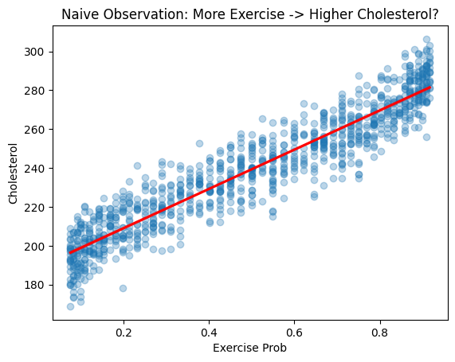
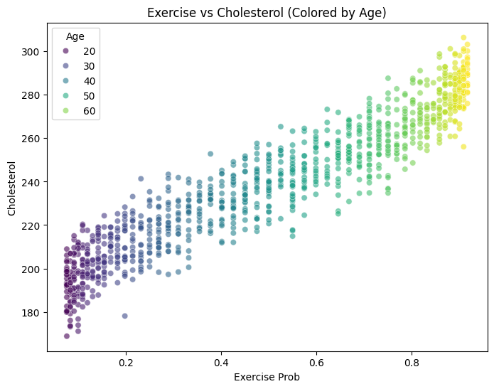

import numpy as np
import pandas as pd
import dowhy
from dowhy import CausalModel
import matplotlib.pyplot as plt
import seaborn as sns
import statsmodels.api as sm
from scipy import statsimport numpy as np
import pandas as pd
import dowhy
from dowhy import CausalModel
import matplotlib.pyplot as plt
import seaborn as sns
# 재현성을 위한 시드 설정
np.random.seed(42)
# 데이터 생성 (N=1000)
N = 1000
# 1. Confounder: 나이 (Age)
# 20세~70세
age = np.random.randint(20, 70, size=N)
# 2. Treatment: 운동량 (Exercise)
# 나이가 많을수록 운동을 많이 함 (Z -> X)
exercise = 0.5 * age + np.random.normal(10, 5, size=N)
# 3. Outcome: 콜레스테롤 수치 (Cholesterol)
# 나이가 많을수록 높음 (Z -> Y), 운동을 많이 할수록 낮아짐 (X -> Y)
# True Causal Effect: 운동 계수는 -1.5 (운동이 1단위 늘면 콜레스테롤 1.5 감소)
cholesterol = 2.0 * age - 1.5 * exercise + np.random.normal(150, 10, size=N)
# DataFrame 생성
df = pd.DataFrame({
'Age': age,
'Exercise': exercise,
'Cholesterol': cholesterol
})
print(df.head()) Age Exercise Cholesterol
0 58 0 269.653010
1 48 1 250.020721
2 34 0 198.060692
3 62 1 276.183373
4 27 0 178.849615np.random.seed(42)
N = 1000
# 1. Confounder: 나이 (Age)
# 20세~70세
age = np.random.randint(20, 70, size=N)
# 2. Treatment: 운동량 (Exercise)
# 나이가 많을수록 운동을 많이 함 (Z -> X)
exercise = 0.5 * age + np.random.normal(10, 5, size=N)
prob_exercise = 1 / (1 + np.exp(-(age - 45) / 10))
exercise = np.random.binomial(1, prob_exercise)
# 3. Outcome: 콜레스테롤 수치 (Cholesterol)
# 나이가 많을수록 높음 (Z -> Y), 운동을 많이 할수록 낮아짐 (X -> Y)
# True Causal Effect: 운동 계수는 -1.5 (운동이 1단위 늘면 콜레스테롤 1.5 감소)
cholesterol = 2.0 * age - 1.5 * exercise + np.random.normal(150, 10, size=N)
# DataFrame 생성
df = pd.DataFrame({
'Age': age,
'Exercise': exercise,
'Exercise Prob': prob_exercise,
'Cholesterol': cholesterol
})
print(df.head()) Age Exercise Exercise Prob Cholesterol
0 58 1 0.785835 269.253660
1 48 0 0.574443 244.536576
2 34 1 0.249740 207.255028
3 62 1 0.845535 275.801668
4 27 0 0.141851 218.567100# 단순 상관계수 확인
correlation = df['Exercise Prob'].corr(df['Cholesterol'])
print(f"Naive Correlation between Exercise and Cholesterol: {correlation:.4f}")
# 시각화 (Simpson's Paradox)
sns.regplot(x='Exercise Prob', y='Cholesterol', data=df, scatter_kws={'alpha':0.3}, line_kws={'color':'red'})
plt.title("Naive Observation: More Exercise -> Higher Cholesterol?")
plt.show()Naive Correlation between Exercise and Cholesterol: 0.9400
plt.figure(figsize=(8, 6))
sns.scatterplot(
x='Exercise Prob',
y='Cholesterol',
data=df,
hue='Age',
palette='viridis',
alpha=0.6
)
plt.title("Exercise vs Cholesterol (Colored by Age)")
plt.legend(title='Age')
plt.show()
# 인과 모델 정의
model = CausalModel(
data=df,
treatment='Exercise',
outcome='Cholesterol',
common_causes=['Age'] # 교란 변수 명시
)
# 모델 시각화
model.view_model()
# 인과 효과 식별
identified_estimand = model.identify_effect()
print(identified_estimand)Estimand type: EstimandType.NONPARAMETRIC_ATE
### Estimand : 1
Estimand name: backdoor
Estimand expression:
d
───────────(E[Cholesterol|Age])
d[Exercise]
Estimand assumption 1, Unconfoundedness: If U→{Exercise} and U→Cholesterol then P(Cholesterol|Exercise,Age,U) = P(Cholesterol|Exercise,Age)
### Estimand : 2
Estimand name: iv
No such variable(s) found!
### Estimand : 3
Estimand name: frontdoor
No such variable(s) found!
# ---------------------------------------------------------
# 방법 1: 선형 회귀 (Back-door Adjustment)
# ---------------------------------------------------------
estimate_reg = model.estimate_effect(
identified_estimand,
method_name="backdoor.linear_regression"
)
print(f"Causal Estimate (Linear Regression): {estimate_reg.value:.4f}")Causal Estimate (Linear Regression): -2.4422# IPW (Inverse Probability Weighting)
estimate_ipw = model.estimate_effect(
identified_estimand,
method_name="backdoor.propensity_score_stratification"
)
print(f"Causal Estimate (Linear Regression): {estimate_reg.value:.4f}")
print(f"Causal Estimate (IPW): {estimate_ipw.value:.4f}")
print(f"True Causal Effect: -1.5")Causal Estimate (Linear Regression): -2.4422
Causal Estimate (IPW): -2.0181
True Causal Effect: -1.5# Placebo Treatment Refuter: 가짜 처리를 주었을 때 효과가 0이 나와야 함
refute_results = model.refute_estimate(
identified_estimand,
estimate_reg,
method_name="placebo_treatment_refuter"
)
print(refute_results)Refute: Use a Placebo Treatment
Estimated effect:-2.442194715216118
New effect:0.04782312921316787
p value:1.0